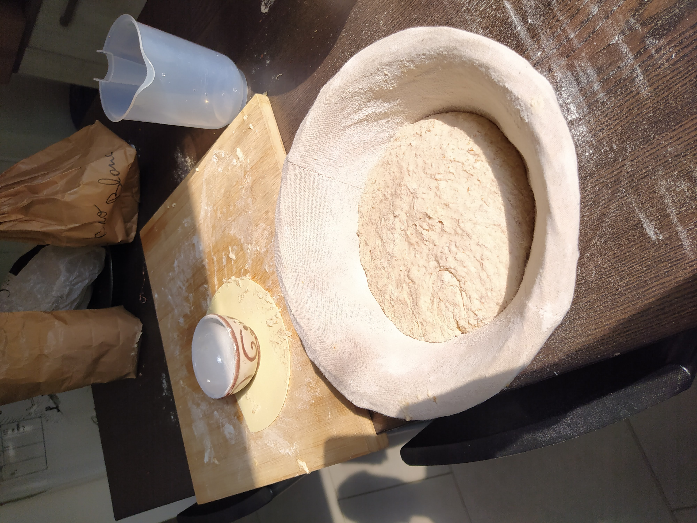
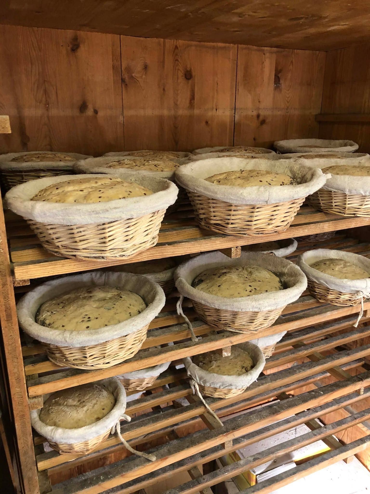
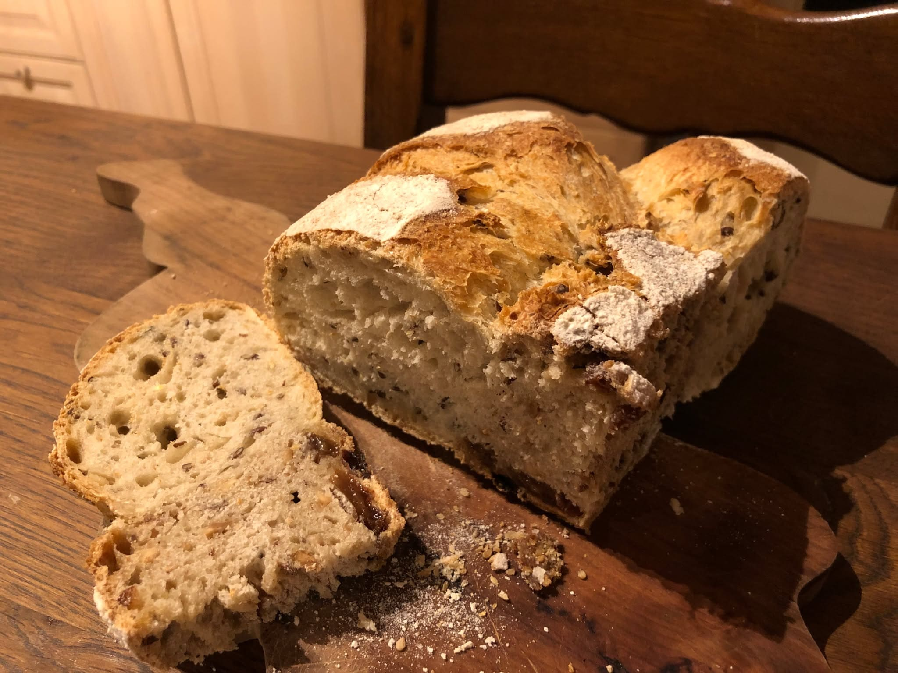

Une meunerie 100% autonome au cœur de la ferme ⚙️
Installée dans l'ancien poulailler, notre meunerie centralise le stockage et la transformation. Bien que notre production agricole (22 à 25 tonnes de céréales par an) ne suffise pas à couvrir tous les besoins du fournil, absolument toute la farine utilisée sera moulue sur place, à partir de nos grains et de grains achetés en complément.
Avant la mouture, le grain est trié puis brossé pour enlever les petites poussières et le prémunir des mycotoxines. Il descend ensuite par gravité vers un moulin de type Astrié. Sa meule de pierre en granit de 50 cm déroule le grain avec une grande douceur (environ 15 kg par heure). Cette extraction à froid (sous les 30°C) préserve le germe de blé et évite l'oxydation. Selon le tamis utilisé, nous séparons le son pour obtenir des farines hautement nutritives allant de la T80 à la T130, capables de se conserver plusieurs semaines.
L'art du levain et du temps long 🥖
Le fournil produit environ 600 kilos de pain par semaine. Nous pratiquons une boulangerie exclusivement au levain naturel, avec un pétrissage partiellement manuel et un façonnage réalisé à 100% à la main.
Notre méthode repose sur une fermentation très longue étalée sur 24 heures (avec une mise au froid des pâtons à 0°C pour la nuit). Ce temps long laissé à la pâte offre des avantages irremplaçables :
- Digestion facilitée : Le travail du levain pré-dégrade le gluten, rendant le pain beaucoup plus doux pour le système digestif.
- Richesse nutritionnelle : Il permet une meilleure assimilation des minéraux (fer, zinc, magnésium) présents dans nos farines de meule.
- Conservation exceptionnelle : L'acidité naturelle du levain ralentit le rassissement, permettant de garder le pain frais pendant plusieurs jours.
- Goût et arômes uniques : Une fermentation lente développe une palette aromatique profonde et complexe.
- 100% Naturel : Sans aucune levure industrielle ni additif, juste de la farine, de l'eau, du sel et le savoir-faire paysan.
Sur le plan logistique, cette méthode nous permet également de séparer l'étape de chauffe du four de la fin de la fermentation, facilitant ainsi notre organisation quotidienne.
Une cuisson maîtrisée au feu de bois 🔥
Nous cuisons nos pains dans un four à bois maçonné de type "Yopiss", équipé d'une sole tournante et d'une chauffe indirecte.
Ce four à très forte inertie emmagasine la chaleur et la restitue de façon extrêmement stable et homogène. Il peut conserver sa chaleur pendant plusieurs jours, ce qui nous offre une grande souplesse et une ergonomie de travail optimale. La chaleur de fin de journée, plus douce, est d'ailleurs valorisée pour cuire nos viennoiseries.
Notre gamme gourmande 🥐
Ce pôle mobilise 2,3 équivalents temps plein pour maîtriser toute la chaîne. En boutique, nous vous proposons : des pains classiques, semi-complets, complets, au petit épeautre, au seigle ou encore aux noix.
L'offre est complétée par nos brioches artisanales (réalisées avec les œufs des poules de la ferme) et par un petit atelier de pâtes fraîches qui nous permet de valoriser notre production de farine sous toutes ses formes.


